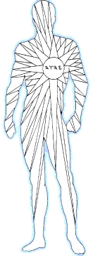
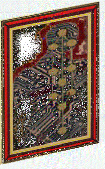

Awaiting a Clear Path to the Banks of Jordan
The instructions on the manner and role of authority in the Kingdom contain the key for dealing successfully with the nations. If we train our faculties upon subduing the sons of darkness, whether they be manifested from within ourselves or whether they are discerned in others, we proclaim our behavior to be not substantially different from that of the Canaanites, themselves.
In speaking of the Kingdom of Heaven, Y'shúa teaches, "the princes of the Gentiles exercise dominion over them; and they that are great exercise authority upon them. But it shall not be so among you: but whosoever will be great among you, let him be your minister; And whosoever will be chief among you, let him be your servant: Even as the Son of Man came not to be ministered unto, but to minister, and to give his life a ransom for many." Amen. Let your blessings come to those who keep your sayings; and continue to be faithful in your ministry unto those who, as of yet, cannot. Teach us to follow in your steps.
Such a focus on appearances, right as it might seem, will bring an evil report as we spy out the lands designated for the faithful of Y'Sharla. Should we persist, we will find ourselves languishing again in the wilderness under a heaven of brass, as the blazing sun brings forth from our imaginations mirages of the qualitative differences we imputed to ourselves because of our calling out of Egypt.
Indeed, hwhy puts a difference between Y'Sharla and the nations: it's his hand that saves, not his calling; for many are called. We exit Egypt in the company of a mixed multitude, and it shall be said of them, as also of us, "this one and that one was born there." It is not for us to separate the sheep from the goats: the wheat and the tares grow together until harvest. We are to apply, with love, the same standard to those natural to Y'Sharla and to those who struggle as strangers among their gifted brethren. The difference between cattle and cattle becomes apparent only as what is contrary to the measurement of Mashiyach falls by the wayside.
The ten reports on Canaan given previously are not good. Should we contend that, after conducting such a vigorous assault upon such lamentable qualities, the Canaanites will be encouraged by our efforts to annihilate the darkness apparent in them by contrasting their spiritual poverty with the light of Messiah found in us: if we do that, we prepare ourselves to act not as priests for their redemption, but as overlords for their subjugation. This is the burden of the nunnery.
Should we succeed in their "conversion" by such methods, they will have been bonded not to the light of Messiah in us, as darkness cannot comprehend light, but to the magnetism of a more compelling darkness that only appears as light. Rather than proclaiming Messiah by the example of the life we lead in Ruach haQodesh, therefore, we will actually become obstacles to their own encounter with the Savior. Idols are positioned on pedestals.
Again, if we should subject dry grass to the sun's light as it is craftily focused by a glass, we effect not renewal and redemption, but a conflagration, from which will arise the unpleasing savors of discouragement and worldly sorrow, if not also of rebellion. How, then, shall we be free of the blood of the grass in the day of its visitation? "What will I," asks Messiah, "if the fire be already kindled?"
Messiah's baptism of fire shall fall everywhere at once-- not merely on selected targets, but upon us all-- to purge the living from the dead. So has its harbinger been hidden with us from the beginning: like the sun's light, it has encompassed the Earth through its daily and its seasonal cycles, with their atmospheric variables, to proclaim the triumph of life. It surrounds and bathes; and it shall penetrate and dispel, for the preservation and transformation of all holy seed.
To kill the Canaanites or to make them subject to a code of conduct by application of human will is not to destroy them. They will be hardened in their error when they see its handiwork insinuating its way into our lives. We make of ourselves busybodies, playing God. They will be affected for good by our example, not by burdens we heap upon their heads. The concept of transformation must grow in the Church-- even as John the Baptist declared, "He must increase, but I must decrease."
If we cannot, for the moment, express how transformation might be better served by our walk in Mashiyach, let us reaffirm that the confrontational approach is not, in every case, expedient. To that end, I have prepared myself to war against the spiritual principality of Jezebel after the manner that has become so familiar in the pulpits of time: I will focus on revelation of darkness in Jezebel, trying to turn her to the light by the spirit of accusation that focus invokes.
According to the second chapter of Revelation, the Gentile Jezebel is, significantly, a woman spiritually. As such, she is commanded not to teach, nor certainly to prophesy, but to receive teaching, according to the natural use taught by the parable of the flesh. When, whether male or female according to the flesh, those who ought to be receiving instruction either elevate themselves or are elevated by default to positions of instructorship in the mystery of Messiah, the blind lead the blind. The ditch into which they are certain to fall, except they repent, is compared to a bed of great tribulation-- of greater tribulation than there has ever been or ever shall be on Earth; for this is the adulterous bed of antichrist, which stands where it ought not to be: in the holy place of believers' hearts.
We know to whom the bed belongs because the two prophets of fire-- of heavenly Wisdom-- appeared first in the days of the natural Jezebel; and so shall they appear, also, at the fullness of iniquity, in these times of the spiritual Jezebel: to stand against her ways and the ways of her king. Blessed are they who shall be separated in loving compassion from the precepts of the churches of the great falling away in our day; for they shall be counted as worthy to stand with Mashiyach on Mount Tsion, proclaiming the everlasting gospel in psalms of praise that shall sound as new songs to our hearing.
There is a time, a purpose, and a prophetic implication for all that happens beneath the sun. The Jezebel of Jezreel and her spiritual projection into our time not only approved of King Ahab's inclination to covet mammon, but also strengthened it unto fruition: in conspiring, by fraud, to deliver to Ahab the vineyard of Naboth, at the cost of both Naboth's life and the lives of his sons, which are as the works of his life. She left him nothing.
"Naboth" means "fruits." The vineyard given unto him for an inheritance belongs to the Husbandman: it is a figure of the fruitful location hwhy has chosen for His throne upon Earth; and Ahab wanted it to build for himself a modest, garden house, that he might fill it with dainties and delights of his own choosing and husbandry.
The church of the falling away imagines that it does not go so far as that. It does not realize that to multiply riches-- of whatever sort-- while another is in want of his inheritance from Yah is to strike at the very life of that soul. It does not realize that its stewardship in the seat of Paul, which is as the seat of Moshe, does not automatically convey the great understanding necessary to occupy that seat in justice, and that the injustices it allows therein war against the Father. It does not realize that its authoritarian approximations of truth have built themselves into an idolatrous image that stands in the holy place-- in the hearts and minds of those who would hear the truth-- to prevent, were it possible, their access to the Living Reality of Elohim.
Cries Elishua, "Is it a time to receive money, and to receive garments, and olive yards, and vineyards, and sheep, and oxen, and menservants, and maidservants? The leprosy therefore of Naaman shall cleave unto thee, and unto thy seed forever." Seek first the fullness of the Kingdom of Elohim and the universal bestowal of His righteousness, and then shall such things be added. To rest in the mammon-- in the values and understandings-- of this world of temporal injustice is to accept the judgment of the unjust. As the leprosy of Naaman fell upon Gehazi, so the destruction appointed for Ben-Hadad fell upon Jezebel, Ahab, and their children. So, also, will it fall upon the seed of spiritual Jezebel, except we repent.
Hear the proverbs: "There is a generation that curseth their father" (in despising the least of His servants), "and doth not bless their mother" (the Church). "There is a generation that are pure in their own eyes, and yet is not washed from their filthiness. There is a generation, O how lofty are their eyes! and their eyelids are lifted up! There is a generation, whose teeth are as swords, and their jaw teeth as knives, to devour the poor from off the Earth, and the needy from among men.... Such is the way of an adulterous woman; she eateth, and wipeth her mouth, and saith, I have done no wickedness. If thou hast done foolishly in lifting up thyself, or if thou hast thought evil, lay thine hand upon thy mouth"-- prophesy not.
The love of money, though it be buried under a mountain of virtuous rigmarole, as was the Babylonian garment in the tent of Achan, is the root of every evil. Therefore, worship of mammon, alone, is not the only reproach of Jezebel. Her spokesmen use the same logic and means that secular kings employ in building their empires to build the Kingdom, which ought not to be of this world. Dangling before their followers, alternately, doctrines of prosperity and the image of a god who badly needs money, they are schooled by the dark psychology of Madison Avenue in the art of wringing allegiance and spoil from the emotional vulnerabilities of their prey, experiencing the depths of Satan as they speak with intent of laying field to field, that there be no room.
That they build in the worldly fashion conditions their flocks to also become embroiled in the world's value systems and politics, because of which entanglements their followers unthinkingly accept as routine the impossible task of serving two masters at once: both Messiah and Caesar, who has been clever enough to change his name and the writs by which he governs; both the Healer by the priceless Word of Spirit and Truth and the manipulator of health by the wielding of expensive scalpels and by the intoxicating witchery of poisonous pills, who justifies his Babylonian art by the voodoo cant of the cult of Education (despite his own profession's knowledge of the body's natural needs and remedies), in obeisance to the power wielded over licensing by medical associations, pharmaceutical interests, and insurance lawyers-- the defenders of the demon-god Accepted Medical Procedure; both the Guardian of the value of sparrows and the guardians of the equipment necessary for the wholesale felling of forests; both the Judge of Righteousness and the judges for graft; both the Winnower and the wheedler, the Prophet and the prognosticator, the Counselor and the consultant.
To convince their followers according to their strong delusions, these blind guides arbitrarily refashion Messiah's image according to ever-changing expediencies of the flesh. By doctrines of demons, in support of which they love to cite the miracles of Technology as they serve the Goliath called Progress, these idol shepherds interpret away the precept, "go and sell that thou hast, and give to the poor and follow me," while inviting followers to withdraw from their unscriptural savings accounts enough to spend a week of personal encounter at Shangri La, followed by another week walking among sacrosanct ruins. Their focus is the outside of the cup, while the inside remains full of extortion and excess, the ravening wickedness of the whited sepulcher.
Most deplorable of all-- especially when any such leader has reached that pinnacle of religious success, the hour-long television spot-- their followers proudly lift them up as examples in the evangelization of others: it's "Brother One says this," and "Brother Two teaches that"-- ignorantly confessing, thereby, their diet of things sacrificed to idols.
Following false messiahs, one after another, with itching ears and with lips blistering in fornicating praise of their merits, the sheep of such shepherds struggle endlessly to contrive the interpretation of the letter-- ever learning, and never coming to knowledge of the Truth: they have not been led into a personal encounter with the Spirit of Prophecy, who has fashioned the letter to speak, eternally, in oracular conjunction with the ongoing revelation that comes by the Living Word.
Ah, Jezebel! Your minions come in His Name, and in the name of His Messiah; but they daily pass the homeless that hath not where to lay their heads-- on the other side of the street, if possible-- with no serious thought of their needs or of their potentials, but only of their pitiable conditions! In your best efforts at charity, you organize rummage sales ("a dime will have to do; our tithes are korban") or campaigns ("all major credit cards accepted"). Listen! Dimes and dollars-- even billions of dollars--do not buy homes!
Hear, Jezebel, the words of Jeremiah: "Your iniquities have turned away these things, and your sins have withholden good things from you. For among my people are found wicked men: they lay wait, as he that setteth snares; they set a trap, they catch men. As a cage is full of birds, so are their houses full of deceit: therefore they are become great, and waxen rich. They are waxen fat, they shine: yea, they overpass the deeds of the wicked: they judge not the cause of the fatherless, yet they prosper; and the right of the needy do they not judge. Shall I not visit for these things? saith hwhy? shall not my soul be avenged on such a nation as this? A wonderful and horrible thing is committed in the land; The prophets prophesy falsely, and the priests bear rule by their means; and my people love to have it so: and what will ye do in the end thereof?"
Have mercy, Heavenly Father! Drive Jezebel and her works from our lives! I know that you are merciful in every judgment, sparing the righteous in the overthrow of the wicked; but for my readers' sakes I write it, that they may know that every soul wearing even a piece of your Son's garments in any denomination or sect of any religion is holy in my sight, as in Yours.
There is none of us righteous, Father-- no not one; and to offend in one point is to offend in all. We praise Your Name because You have made us one in offense, that we may be perfected as One in Your righteousness when Your Son returns with the baptism of purifying fire. How we long to become the burning bush Moshe saw, that every spot and wrinkle belonging to the man of sin be consumed as the bush is purged in the holy fire that bathes the Son of Man!
Ah, Jezebel! You are Ephrayim gone backwards! Your king had better been your servant than your slave, but you have inflamed him by your sorceries and have lifted him up to rule as perpetually over you, while you, yourself, have taken the reins to keep him there! He falls at every moment; but you cajole him and caress him and wet him with your lips, that he may be always before your eyes. "Stand forth!" you yet cry, though he has been utterly emptied of all his strength.
Ah, Jezebel! You are a queen arisen from the vomit of dogs. Your sons, you have made into daughters; and your daughters, into sons like unto yourself. They mince like girls and shade their eyes, but their mockery is for mastery. "Go to the right!" they command, while pointing left. "Stand!" they implore, while shoving with the hand. "You are an offense unto me!" they proclaim: "Come in unto me, and I will teach you to be pleasing." They reach down to pull up and up to pull down and outward all ways always, that none but they might be filled. Selah.
We are building New Yahrushaliem. Its walls should be Salvation; and its gates, Praise: Father hy has promised to hasten it in its time! What can we answer for our confusion of faces?
We learn from those who passed this way before us. When the fathers began to rebuild the temple at Jerusalem in the Babylonian captivity under the benevolence of Persia at HaShem's command, it was necessary for the building to be suspended for a time. The letters recounting this history are in Ezra; the word of hwhy by which the building was resumed is written in Haggai's prophecy.
As we, in our turn, have begun to rebuild the Tabernacle of David, we have come to a time of pause. The bustle of building and our hope of seeing holy Tsion again in its strength have pressed upon us as we built. We thought of judgments of the past, resolving to avoid them by vigilance in the future; but the rumors of our activities have disturbed the kings of our inward captivity, and our labors have halted in confused expressions. We could go on with analysis of the dynamics to which we have become subjected; on, also, with keen insights on the leavening presence of Jezebel among us. She was slain in Jezreel, but she was not at all destroyed: she was sown there, and great shall be the day of Jezreel's harvest!
In the days of Jezebel, Jericho was rebuilt: the City of Lunation, whose ruling light is the lesser light of the moon. The Great Light proclaimed, "Thou shalt not kill." The lesser light interpreted, because of the hardness of our hearts, "Thou shalt do no murder." Neat difference! Hear Ezekiel 20 in the context of Leviticus 24:10-33!
It was by Jericho's influence that Jehu interpreted his instructions as authority to build up Zion with blood, whereas the scriptures testify that HaShem can both save and destroy by His own agency. Many years later, the prophet Hosea is told to name his son Jezreel: "for yet a little while, and I will avenge the blood of Jezreel upon the house of Jehu." Following the letter of his instructions to execute judgment on the house of Ahab because it pleased him to do so, Jehu accomplished not a lasting thing, beyond demonstrating yet another turn upon the broad pathways of death.
If this manner of preaching is expedient because of our weaknesses in the flesh, it is yet not without fault; for every exterior battle is with confused noise and garments rolled in blood. If its violence in the service of justice on behalf of mercy is covered by the blood of Mashiyach and rectified by the salt Elishúa added to the waters of Jericho, why should we yet choose it? Paul has written of a better way; and Y'shúa vouchsafed that way's alignment with the teachings of Moshe.
The children of darkness demonstrate the folly of their focus; but we are to call no one fools. They have done their service exceedingly well in revealing the permutations of the law of sin unto death! Shall not their redemption draw nigh in the triumph of the prior, greater, more abounding law of grace? When the fullness of Messiah appears in the mature manifestation of the Sons of Elohim, shall not the darkened hearts held captive in sin groan unto repentance because they are not so clothed as are the Sons of Spirit? In the restoration of all things, we shall behold all Y'Sharla in the truly glorious garments of the magnified, honorable, and eternal Torah, whose light is Messiah.
Messiah declares, "I, if I be lifted up from the earth, will draw all men unto me.'' If the newscasts speak truth, something other than Messiah has been lifted up on the arms of the Church for these past thousands of years. But imagine no evil against His bride: for hwhy has not beheld iniquity in Yaaqov, nor perverseness in Israel; and He says, by the Son, "Woman, where are your accusers? has no man condemned you? Neither do I condemn you: go, and sin no more."
The commandment is exceeding broad, incapable of fulfillment by disjointed observances. The letter of Moses accuses the slaves of Jezebel, and the prophets proclaim the judgments; Paul accuses also, according to prevalent interpretations of his writings; the natural order also accuses; their own thoughts accuse them! Shall Messiah, alone, intercede on their behalf, that the souls Jezebel has ensnared may be called out of desolation; or can we also humble ourselves to actively take up His cross of perfect submission in the Father's will: to minister the gospel of grace with judgment balanced by compassion for those Satan has bound, that they, as we, can be set free? For only when all are drawn into Messiah will the accuser of the brethren be cast down: he was ordained for the edification of the Body, and he can be taken away only when the Body of Messiah fills all things.
Having, ourselves, been ordained as a royal priesthood, it is agreed, we must somehow orient our minds to service in the name of Yahushúa for the redemption and regeneration of all mankind; for Messiah comes to save men, not to destroy them. Should we prove incapable of higher service than we have known, the angel waiting, one day, on Yordan's other side will answer our greeting, to our shame: "Nay, but as captain of the host of hwhy/Unity am I now come." Selah.
I don't know how many times in my spiritual life I determined to rid myself of this inner monstrosity or of that slight imperfection. To the degree I ever succeeded in any such resolve, it is certain that my success was limited to hindrance of the manifestation, not to its uprooting; for I did not-- even once-- achieve perfect victory over the root source of offense, the man of sin buried deep within.
When an appearance, only, is destroyed, its roots are not exposed. New growths are liable to sprout from those roots at any time, so long as they live. By such progress, we go backwards; for we deny the inward power of the presence of Elohim, and we strengthen the delusion that we are capable of working out our own salvation by application of our own wills. Having a form of godliness but denying the power thereof, we utterly forget the promise that all things-- from the beginning to the end-- work together for good. Thus, we engender schism after schism in the Church, even as we blithely divide our own house to its ruin: pitting spirit against flesh, to the destruction of soul.
Recall, with me, the words of the prophet YirmeYahu in the rest that remains in
hwhy:
The word of hwhy that came to Jeremiah concerning the dearth. Judah mourneth, and the gates thereof languish; they are black unto the ground; and the cry of Jerusalem is gone up. And their nobles have sent their little ones to the waters: they came to the pits, and found no water; they returned with their vessels empty; they were ashamed and confounded, and covered their heads. Because the ground is chapt, for there was no rain in the earth, the plowmen were ashamed, they covered their heads. Yea, the hind also calved in the field, and forsook it, because there was no grass. And the wild asses did stand in the high places, they snuffed up the wind like dragons; their eyes did fail, because there was no grass.
O hwhy, though our iniquities testify against us, do thou it for thy Name's sake: for our backslidings are many; we have sinned against thee. O the hope of Yisrael, the Saviour thereof in time of trouble, why shouldest thou be as a stranger in the land, and as a wayfaring man that turneth aside to tarry for a night? Why shouldest thou be as a man astonished, as a mighty man that cannot save? yet thou, O hwhy, art in the midst of us, and we are called by thy Name; leave us not.
Thus saith hwhy unto this people, Thus have they loved to wander, they have not refrained their feet, therefore hwhy doth not accept them; he will now remember their iniquity, and visit their sins. Then said hwhy unto me, Pray not for this people for their good. When they fast, I will not hear their cry; and when they offer burnt offering and an oblation, I will not accept them: but I will consume them by the sword, and by the famine, and by the pestilence.
Then said I, Ah, my Lord hwhy, behold, the prophets say unto them, Ye shall not see the sword, neither shall ye have famine; but I will give you assured peace in this place. Then hwhy said unto me, The prophets prophesy lies in my Name: I sent them not, neither have I commanded them, neither spake unto them: they prophesy unto you a false vision and divination, and a thing of naught, and the deceit of their heart.
Therefore thus saith hwhy concerning the prophets that prophesy in my Name, and I sent them not, yet they say, Sword and famine shall not be in this land; By sword and famine shall those prophets be consumed. And the people to whom they prophesy shall be cast out in the streets of Jerusalem because of the famine and the sword; and they shall have none to bury them, them, their wives, nor their sons, nor their daughters: for I will pour their wickedness upon them.
Therefore thou shalt say this word unto them; Let mine eyes run down with tears night and day, and let them not cease: for the virgin daughter of my people is broken with a great breach, with a very grievous blow. If I go forth into the field, then behold the slain with the sword! and if I enter into the city, then behold them that are sick with famine! yea, both the prophet and the priest go about into a land that they know not.
Hast thou utterly rejected Judah? hath thy soul loathed Zion? why hast thou smitten us, and there is no healing for us? we looked for peace, and there is no good; and for the time of healing, and behold trouble! We acknowledge, O hwhy, our wickedness, and the iniquity of our fathers: for we have sinned against thee.
Do not abhor us, for thy Name's sake, do not disgrace the throne of thy glory: remember, break not thy covenant with us. Are there any among the vanities of the Gentiles that can cause rain? or can the heavens give showers? art not thou he, O hwhy our Elohim? therefore we will wait upon thee: for thou hast made all these things.
It is written, "Behold, every one that useth proverbs shall use this proverb against thee, saying, As is the mother, so is her daughter." The parable continues by characterizing the mother as a Hittite and the father as an Amorite, the genealogical rebuke coming because the children of Israel could not hearken to every word of Deuteronomy 7 in the context of every word then given by the Word of hwhy. Their focus on words blinded them to the scope of the message, which perception comes only by the Spirit.
If the sons of the mother church, as they interpreted Torah, physically destroyed the Canaani in an attempt to fulfill the letter of the Law, they were as savages (Hittites) acting upon appearances (Amorites), and they came to no real understanding of the inner significance of the precepts with which they had been entrusted and the manner of their fulfillment unto rest.
As we of the dry tree spy out the land revealed first to the green tree, we have been too ready to follow the course the prophets lament. Indeed, the secular history of the churches of the Incarnation confirms the parable of daughter and mother-- with its crusades, inquisitions, and countless strategies to make the world safe for "Christianity": all of these things being reflections of interiorized doctrines of death; and for all of these things, the way of truth is evil spoken of.
Nevertheless, praise Elohim: the heartaches of mothers and daughters and fathers and sons shall be changed to joy in the morning of the Jubilee; for the remnants are preserved in the broken stick depicting Yahúdah and Ephrayim; and the two royal houses shall again be united at Messiah's return, in the restoration of the Law of grace and the Gospel of Truth. The pruning and grafting of the Tree of Life throughout the ages of man have had but one purpose: the perfecting of its fruit upon Earth, even as it is perfected in Heaven.
We neither stone sinners, literally or figuratively, nor command that the stones (words) that present themselves to our hands be turned into bread for their nourishment. The time of their visitation by the living stones of Messiah will come as we wait upon hwhy to draw the Canaanites into his Light. When it comes, the nourishment they require will be given; for it is not we who shall speak, nor is it our light that shall shine upon them: the battle is HaShem's, and we participate in jihad, the holy and peaceful war, by coming to rest in his victory in the place He chooses to position us for service.
We neither cast ourselves down from holy pinnacles to which we may have arisen nor refuse to descend as vessels for visitation and healing. We part the hoof, waiting upon hwhy to light and to direct our paths, chewing the cud the while. We do not refuse to ascend, but neither do we take authority unto ourselves when we are lifted up; for it is not we who are lifted up, but Messiah in us. We are called simply to offer our body members and faculties in willing sacrifice to the palpable presence of the Living Oracle of Elohim as it tabernacles within us.
hwhy drives His enemies out! As the Canaani are driven out-- little by little, lest their qualities multiply within us beyond our ability to comprehend-- we confirm their destruction in the Light of El according to the revelation of their absence; for darkness vanishes at the touch of light. As the uplifted arm of Yah appears, we celebrate the Shúa of Yah and affirm the seal of His righteousness in us by praise: "Free at last. Free at last! Praise God Almighty, we're free at last!"
To war with a tyrant, within or without, is to open to the spirit of tyranny. Whoever kills by the sword of steel or by the tongue, as the sword of flesh, must be killed-- judged-- by the sword. A "just" war between peoples is merely war, filled utterly with injustice. We are not called to destroy, lest we destroy the wheat also. We are called to save and to preserve life by a holy, spiritual warfare consisting of sacrifice of self: by the application of mercy in the service of Truth, according to the express direction of the Holy Spirit.
We possess the promised land by peace, not for peace. Crossing over Jordan, we reflect upon Yah's acts of Salvation, as we also search deep for residual Canaanite roots that remain (their wives), and we also search long for new sprouts from those roots or from seed long embedded in the ground (their daughters and sons), praying for full release of the Canaanite warriors as they are isolated to our observation and winnowed from our beings by acts of Yah. We make a joyful noise unto hwhy: the fire of praise devouring before us and the flame of the righteousness of hwhy burning behind us, we lift up our heads in celebration of the glorious victory of our Messiah. We do not break ranks.
Consider the passage concerning the dearth in the context of the words about Jezebel. Prosperity, even as our souls prosper! How can our souls prosper, when streets are filling with the homeless and destitute, the slain and the starving? Perilous times! We attend on those invoking the Name, that we may drink of the Living Waters that flow from Messiah through them, finding but broken cisterns and the chapped ground of dark servants masquerading as messengers of Light by the power of the letter in their mouths. No grass! The people are perished from a land now filled with shells of men lacking ears to hear the sound of the trumpet!
The great breach befell the throne within our own hearts, which ought to be occupied by the Living Oracle of the Word of Elohim. How grievous, the blow that brought that separation by the great falling away; for how shall we be restored in all things, unless that breach again be filled? Let us, therefore, be among the blessed that wait upon the lifting of His countenance; for having made all these things, and having brought all these things to their present state according to His perfect will for good, HaShem knows well when we shall be prepared to learn from their passing in the sway of the two-edged sword of Yahushúa, the Living Word and our gentle Master.
For the present, then, let us-- as an unfailing remnant of the kingdom of priests, of the holy nation-- declare to all that hwhy lives: that the great King shouts from within His holy temple. We are certain of His triumph in righteousness for all mankind; so let us boldly take our stand in the Malkuth of Canaan as faithful spies. Not hearkening overmuch to the noise of the land itself, let us remain open to the teaching of the Holy Spirit on the land's transformation. The day comes quickly. He that believes will not make haste.
|
site |
The Good Reports |
book |